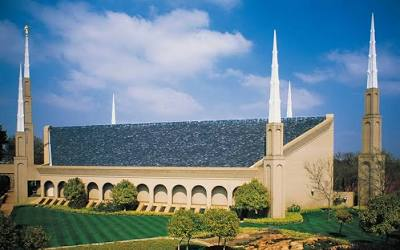

South Africa

About the Temple
The Johannesburg South Africa Temple is the 36th temple to be built in South Africa.
Dedicated 25 May 2025: Dedicatory Prayer
Visiting Information
- Location: 7 Lhengele Street, Parktown, Johannesburg, South Africa
- Hours: Check Ordinance Schedule
- Phone: +27 11 644-2600
- Housing: Available